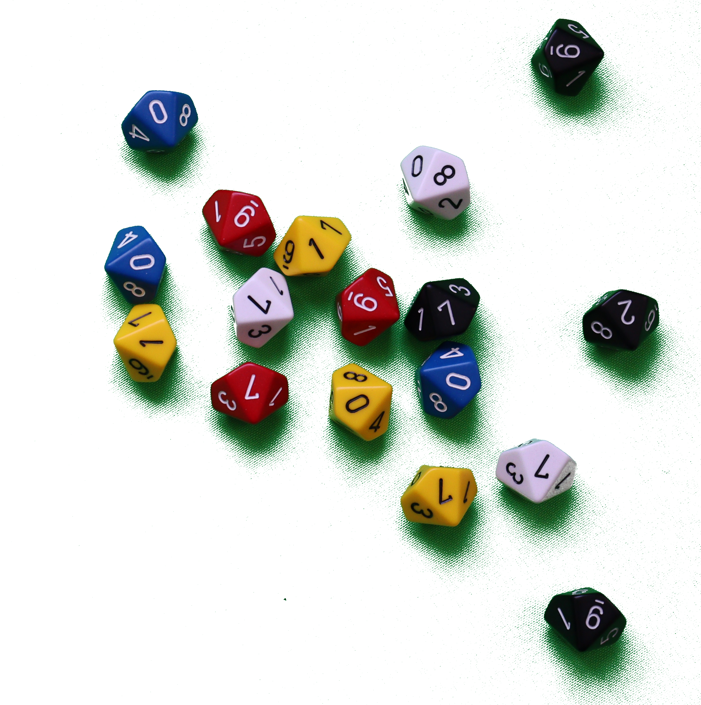

a <- 1
# Show the value of "a"
a[1] 1Chapter 2 used simulation and resampling from tables of random numbers, dice, and coins. Making random choices in this way can make it easier to understand the process, but of course, physical methods of making random outcomes can be slow and boring.
We saw that short computer programs can do a huge number of resampling trials in a less than a second. The flexibility of a programming language makes it possible to simulate many different outcomes and tests.
Programs can build up tables of random numbers, and do basic tasks like counting the number of values in a row or taking proportions. With these simple tools, we can simulate many problems in probability and statistics.
In this chapter, we will model another problem using R, but this chapter will add three new things.
The problem we will work on is a little different from the ambulances problem from Chapter 2. It is a real problem about deciding whether a new cancer treatment is better than the alternatives, and it introduces the idea of making a model of the world, to ask questions about chances and probabilities.
We will slow down a little to emphasize the steps in solving this kind of problem. First we work out how to simulate a single trial. Then we work out how to run many simulated trials.
We sprinted through the code in Chapter 2, with the promise we would come back to the details. Here we go into more detail about some ideas from the code in the last chapter. These are:
In the next chapter, we will talk more about using vectors to store results, and for loops to repeat a procedure many times.
We have already emphasized that statistics is a way of drawing conclusions about data from the real world, in the presence of random variation; probability is the way of reasoning about random variation. This chapter introduces our first statistical problem, where we use probability to draw conclusions about some important data — about a potential cure for a type of cancer. We will not make much of the distinction between probability and statistics here, but we will come back to it several times in later chapters.
Burkitt lymphoma is an unusual cancer of the lymphatic system. The lymphatic system is a vein-like network throughout the body that is involved in the immune reaction to disease. In developed countries, with standard treatment, the cure rate for Burkitt lymphoma is about 90%.
In 2006, researchers at the US National Cancer Institute (NCI), tested a new treatment for Burkitt lymphoma (Dunleavy et al. 2006). They gave the new treatment to 17 patients, and found that all 17 patients were doing well after two years or more of follow up. By “doing well”, we mean that their lymphoma had not progressed; as a short-hand, we will say that these patients were “cured”, but of course, we do not know what happened to them after this follow up.
Here is where we put on our statistical hat and ask ourselves the following question — how surprised are we that the NCI researchers saw their result of 17 out of 17 patients cured?
At this stage you might and should ask, what could we possibly mean by “surprised”? That is a good and important question, and we will discuss that much more in the chapters to come. For now, please bear with us as we do a thought experiment.
Let us forget the 17 out of 17 result of the NCI study for a moment. Imagine that there is another hospital, called Saint Hypothetical General, just down the road from the NCI, that was also treating 17 patients with Burkitt lymphoma. Saint Hypothetical were not using the NCI treatment, they were using the standard treatment.
We already know that each patient given the standard treatment has a 90% chance of cure. Given that 90% cure rate, what is the chance that 17 out of 17 of the Hypothetical group will be cured?
You may notice that this question about the Hypothetical group is similar to the problem of the 20 ambulances in Chapter Chapter 2. In that problem, we were interested to know how likely it was that 3 or more of 20 ambulances would be out of action on any one day, given that each ambulance had a 10% chance of being out of action. Here we would like to know the chances that all 17 patients would be cured, given that each patient has a 90% chance of being cured.
As in the ambulance example, we could make a physical model of chance in this world. For example, to simulate whether a given patient is cured or not by a 90% effective treatment, we could throw a ten sided die and record the result. We could say, arbitrarily, that a result of 0 means “not cured”, and all the numbers 1 through 9 mean “cured” (typical 10-sided dice have sides numbered 0 through 9).
We could roll 17 dice to simulate one “trial” in this random world. For each trial, we record the number of dice that show numbers 1 through 9 (and not 0). This will be a number between 0 and 17, and it is the number of patients “cured” in our simulated trial.
Figure 5.1 is the result of one such trial we did with a set of 17 10-sided dice we happened to have to hand:

The trial in Figure 5.1 shows are four dice with the 0 face uppermost, and the rest with numbers from 1 through 9. Therefore, there were 13 out of 17 not-zero numbers, meaning that 13 out of 17 simulated “patients” were “cured” in this simulated trial.
We could repeat this simulated trial procedure 100 times, and we would then have 100 counts of the not-zero numbers. Each of the 100 counts would be the number of patients cured in that trial. We can ask how many of these 100 counts were equal to 17. This will give us an estimate of the probability we would see 17 out of 17 patients cured, given that any one patient has a 90% chance of cure. For example, say we saw 15 out of 100 counts were equal to 17. That would give us an estimate of 15 / 100 or 0.15 or 15%, for the probability we would see 17 out of 17 patients cured.
So, if Saint Hypothetical General did see 17 out of 17 patients cured with the standard treatment, they would be a little surprised, because they would only expect to see that happen 15% of the time. But they would not be very surprised — 15% of the time is uncommon, but not very uncommon.
Here we stop to emphasize the steps in the process of a random simulation.
Our next step is to work out the code for step 2: simulate one trial.
We can use the computer to do something very similar to rolling 17 10-sided dice, by asking the computer for 17 random whole numbers from 0 through 9.
A whole number is a number that is not negative, and does not have fractional part (does not have anything after a decimal point). 0 and 1 and 2 and 3 are whole numbers, but -1 and \(\frac{3}{5}\) and 11.3 are not. The whole numbers from 0 through 9 are 0, 1, 2, 3, 4, 5, 6, 7, 8, 9.
We have already discussed what we mean by random in Section 2.2.
We need to prepare the sequence of numbers that we want R to select from.
We have already seen the idea that R has values that are individual numbers. Remember, a variable is a named value. Here we attach the name a to the value 1.
a <- 1
# Show the value of "a"
a[1] 1R also allows values that are sequences of numbers. R calls these sequences vectors.
The name vector sounds rather technical and mathematical, but the only important idea for us is that a vector stores a sequence of numbers.
Here we make a vector that contains the 10 numbers we will select from:
# Make a vector of numbers, store with the name "some_numbers".
some_numbers <- c(0, 1, 2, 3, 4, 5, 6, 7, 8, 9)
# Show the value of "some_numbers"
some_numbers [1] 0 1 2 3 4 5 6 7 8 9Notice that the value for some_numbers is a vector, and that this value contains 10 numbers.
Put another way, some_numbers is now the name we can use for this collection of 10 values.
Vectors are very useful for simulations and data analysis, and we will be using these for nearly every example in this book.
Functions are another tool that we will be using everywhere, and that you seen already, although we have not introduced them until now.
You can think of functions as named production lines.
For example, consider the R function round
round is the name for a simple production line, that takes in a number, and (by default) sends back the number rounded to the nearest integer.
An integer is a positive or negative whole number.
In other words, a number is an integer if the number is either a whole number (0, 1, 2 …), or a negative whole number (-1, -2, -3 …). All of -208, -2, 0, 10, 105 are integers, but \(\frac{3}{5}\), -10.3 and 0.2 are not.
We will use the term integer fairly often, because it is a convenient way to name all the positive and negative whole numbers.
Think of a function as a named production line. We sent the function (production line) raw material (components) to work on. The production line does some work on the components. A finished result comes off the other end.
Therefore, think of round as the name of a production line, that takes in a component (in this case, any number), and does some work, and sends back the finished result (in this case, the number rounded to the nearest integer.
The components we send to a function are called arguments. The finished result the function sends back is the return value.
See Figure 5.2 for an illustration of round as a production line.
round function as a production lineIn the next few code chunks, you see examples where round takes in a not-integer number, as an argument, and sends back the nearest integer as the return value:
# Put in 3.2, round sends back 3.
round(3.2)[1] 3# Put in -2.7, round sends back -3.
round(-2.7)[1] -3Like many functions, round can take more than one argument (component). You can send range the number of digits you want to round to, after the number of you want it to work on, like this (see Figure 5.3):
# Put in 3.1415, and the number of digits to round to (2).
# round sends back 3.14
round(3.1415, 2)[1] 3.14round with optional arguments specifying number of digitsNotice that the second argument — here 2 — is optional. We only have to send round one argument: the number we want it to round. But we can optionally send it a second argument — the number of decimal places we want it to round to. If we don’t specify the second argument, then round assumes we want to round to 0 decimal places, and therefore, to the nearest integer.
In the example above, we sent round two arguments. round knows that we mean the first argument to be the number we want to round, and the second argument is the number of decimal places we want to round to. It knows which is which by the position of the arguments — the first argument is the number it should round, and second is the number of digits.
In fact, internally, the round function also gives these arguments names. It calls the number it should round — x — and the number of digits it should round to — digits. This is useful, because it is often clearer and simpler to identify the argument we are specifying with its name, instead of just relying on its position.
If we aren’t using the argument names, we call the round function as we did above:
# Put in 3.1415, and the number of digits to round to (2).
# round sends back 3.14
round(3.1415, 2)[1] 3.14In this call, we relied on the fact that we, the people writing the code, and you, the person reading the code, remembers that the second argument (2) means the number of decimal places it should round to. But, we can also specify the argument using its name, like this (see Figure 5.4):
# Put in 3.1415, and the number of digits to round to (2).
# Use the name of the number-of-decimals argument for clarity:
round(3.1415, digits=2)[1] 3.14round function with argument namesnp.round function with argument namesHere R sees the first argument, as before, and assumes that it is the number we want to round. Then it sees the second, named argument — digits=2 — and knows, from the name, that we mean this to be the number of decimals to round to.
In fact, we could even specify both arguments by name, like this:
# Put in 3.1415, and the number of digits to round to (2).
# Name both arguments.
round(x=3.1415, digits=2)[1] 3.14We don’t usually name both arguments for round, as we have above, because it is so obvious that the first argument is the thing we want to round, and so naming the argument does not make it any more clear what the code is doing. But — as so often in programming — whether to use the names, or let R work out which argument is which by position, is a judgment call. The judgment you are making is about the way to write the code to be most clear for your reader, where your most important reader may be you, coming back to the code in a week or a year.
You can find the names of the function arguments in the help for the function, either online, or in the notebook interface. For example, to get the help for round, including the argument names, you could make a new chunk, and type ?round, then execute the cell by running the chunk. This will show the help for the function in the notebook interface.
Now let us return to the variable some_numbers that we created above:
# Make a vector of numbers, store with the name "some_numbers".
some_numbers <- c(0, 1, 2, 3, 4, 5, 6, 7, 8, 9)
# Show the value of "some_numbers"
some_numbers [1] 0 1 2 3 4 5 6 7 8 9In fact, we often need to do this: generate a sequence or range of integers, such as 0 through 9.
Ranges can be confusing in normal speech because it is not always clear whether they include their beginning and end. For example, if someone says “pick a number between 1 and 5”, do they mean all the numbers, including the first and last (any of 1 or 2 or 3 or 4 or 5)? Or do they mean only the numbers that are between 1 and 5 (so 2 or 3 or 4)? Or do they mean all the numbers up to, but not including 5 (so 1 or 2 or 3 or 4)?
To avoid this confusion, we will nearly always use “from” and “through” in ranges, meaning that we do include both the start and the end number. For example, if we say “pick a number from 1 through 5” we mean one of 1 or 2 or 3 or 4 or 5.
Creating ranges of numbers is so common that R has a special syntax to do that.
R allows you to write a colon (:) between two values, to mean that you want a vector (sequence) that is all the integers from the first value (before the colon) through the second value (after the colon):
# A vector containing all the integers from 0 through 9.
some_integers = 0:9
some_integers [1] 0 1 2 3 4 5 6 7 8 9Here are some more examples of the colon syntax:
# All the integers from 10 through 14
10:14[1] 10 11 12 13 14# All the integers from -1 through 5
-1:5[1] -1 0 1 2 3 4 5We can use the sample function to select a single value at random from the sequence of numbers in some_integers.
sample
The sample function will be a fundamental tool for taking many kinds of samples, and we cover it in more detail in Chapter 7.
# Select 1 integer (the second argument) from the choices in some_integers
# (the first argument).
my_integer <- sample(some_integers, 1)
# Show the value that results.
my_integer[1] 6Like round (above), sample is a function.
As you remember, a function is a named production line. In our case, the production line has the name the sample function.
We sent the sample function. a value to work on — an argument. In this case, the argument was the value of some_integers.
sample also needs the number of random values we should select from the first argument. We can send the number of values we want with the second argument.
Figure 5.6 is a diagram illustrating an example run of the sample function (production line).
sample functionHere is the same code again, with new comments.
# Send the value of "some_integers" to sample.
# some_integers is the *argument*. Ask sample to return 1 of the values.
# Put the *return* value from the function into "my_number".
my_number <- sample(some_integers, 1)
# Show the value that results.
my_number[1] 4In the code above, we asked R to select a single number at random — by sending 1 as the second argument to the function.
As you can imagine, we can tell sample to select any number of values at random, by changing the second argument to the function.
In our case, we would like R to select 17 numbers at random from the sequence of some_integers.
But — there is a complication here. By default, sample selects numbers from the first argument without replacement, meaning that, by default, sample cannot select the same number twice, and in our case, where we want 17 numbers, that is bad, because sample is going to run out of numbers. To get the result we want, we must also add an extra argument: replace=TRUE. replace=TRUE tells R to sample some_integers with replacement, where sample can select the same number more than once in the same sample. Sampling with and without replacement is a fundamental distinction in probability and statistics. Chapter 7 goes into much more detail about this, but for now, please take our word for it that using replace=TRUE for sample gives us the same effect as rolling several 10-sided dice.
# Get 17 values from the *some_integers* vector.
# Sample *with replacement*, so sample can select numbers more than once.
# Store the 17 numbers with the name "a"
a <- sample(some_integers, 17, replace=TRUE)
# Show the result.
a [1] 5 3 5 8 4 4 7 1 6 4 4 1 5 3 1 2 8As you can see, the function sent back (returned) 17 numbers. Because it is sending back more than one number, the thing it sends back is a vector, where the vector has 17 elements.
sum — adding all the valuesBear with us for a short diversion. You will see why we made this diversion soon.
R has a function sum that will add up all the numbers in a vector.
You can see the contents of a above.
sum adds all the numbers in the vector together, to give the sum of the vector. The sum is just the result of adding the second element to the first, then adding third element to the result, and the fourth element to the result, and so on.
sum(a)[1] 71We now have the code to do the equivalent of throwing 17 ten-sided dice. This is the basis for one simulated trial in the world of Saint Hypothetical General.
Our next job is to get the code to count the number of numbers that are not zero in the vector a. That will give us the number of patients who were cured in simulated trial.
Another way of asking this question, is to ask how many elements in a are greater than zero.
To ask whether a number is greater than zero, we use comparison. Here is a greater than zero comparison on a single number:
n <- 5
# Is the value of n greater than 0?
# Show the result of the comparison.
n > 0[1] TRUE> is a comparison — it asks a question about the numbers either side of it. In this case > is asking the question “is the value of n (on the left hand side) greater than 0 (on the right hand side)?” The value of n is 5, so the question becomes, “is 5 greater than 0?” The answer is Yes, and R represents this Yes answer as the value TRUE.
In contrast, the comparison below boils down to “is 0 greater than 0?”, to which the answer is No, and R represents this as FALSE.
p <- 0
# Is the value of p greater than 0?
# Show the result of the comparison.
p > 0[1] FALSESo far you have seen the results of comparison on a single number. Now say we do the same comparison on a vector. For example, say we ask the question “is the value of a greater than 0”? Remember, a is a vector containing 17 values. We are comparing 17 values to one value (0). What answer do you think R will give? You may want to think a little about this before you read on.
As a reminder, here is the current value for a:
# Show the current value for "a"
a [1] 5 3 5 8 4 4 7 1 6 4 4 1 5 3 1 2 8Now you have had some time to think, here is what happens:
# Is the value of "a" greater than 0?
# Show the result of the comparison.
a > 0 [1] TRUE TRUE TRUE TRUE TRUE TRUE TRUE TRUE TRUE TRUE TRUE TRUE TRUE TRUE TRUE
[16] TRUE TRUEThere are 17 values in a, so the comparison to 0 means there are 17 comparisons, and 17 answers. R therefore returns a vector of 17 elements, containing these 17 answers. The first answer is the answer to the question “is the value of the first element of a greater than 0”, and the second is the answer to “is the value of the second element of a greater than 0”.
Let us store the result of this comparison to work on:
# Is the value of "a" greater than 0?
# Store as another vector "q".
q <- a > 0
# Show the value of q
q [1] TRUE TRUE TRUE TRUE TRUE TRUE TRUE TRUE TRUE TRUE TRUE TRUE TRUE TRUE TRUE
[16] TRUE TRUETRUE values with sumNotice above that there is one TRUE element in q for every element in a that was greater than 0. It only remains to count the number of TRUE values in q, to get the count of patients in our simulated trial who were cured.
We can use the R function sum to count the number of TRUE elements in a vector. As you can see above, sum adds up all the elements in a vector, to give a single number. This will work as we want for the q vector, because R counts FALSE as equal to 0 and TRUE as equal to 1:
# Question: is FALSE equal to 0?
# Answer - Yes! (TRUE)
FALSE == 0[1] TRUE# Question: is TRUE equal to 1?
# Answer - Yes! (TRUE)
TRUE == 1[1] TRUETherefore, the function sum, when applied to a vector of TRUE and FALSE values, will count the number of TRUE values in the vector.
To see this in action we can make a new vector of TRUE and FALSE values, and try using sum on the new array.
# A vector containing three TRUE values and two FALSE values.
trues_and_falses <- c(TRUE, FALSE, TRUE, TRUE, FALSE)
# Show the new vector.
trues_and_falses[1] TRUE FALSE TRUE TRUE FALSEThe sum operation adds all the elements in the vector. Because TRUE counts as 1, and FALSE counts as 0, adding all the elements in trues_and_falses is the same as adding up the values 1 + 0 + 1 + 1 + 0, to give 3.
We can apply the same operation on q to count the number of TRUE values.
# Count the number of TRUE values in "q"
# This is the same as the number of values in "a" that are greater than 0.
b <- sum(q)
# Show the result
b[1] 17We now have the whole procedure for one simulated trial. We can put the whole procedure in one chunk:
# Procedure for one simulated trial
# Get 17 values from the *some_integers* vector.
# Store the 17 numbers with the name "a"
a <- sample(some_integers, 17, replace=TRUE)
# Is the value of "a" greater than 0?
q <- a > 0
# Count the number of TRUE values in "q"
b <- sum(q)
# Show the result of this simulated trial.
b[1] 15Now we know how to do one simulated trial, we could just keep running the chunk above, and writing down the result each time. Once we had run the chunk 100 times, we would have 100 counts. Then we could look at the 100 counts to see how many were equal to 17 (all 17 simulated patients cured on that trial). At least that would be much faster than rolling 17 dice 100 times, but we would also like the computer to automate the process of repeating the trial, and keeping track of the counts.
Please forgive us as we race ahead again, as we did in the last chapter. As in the last chapter, we will use a results vector called z to store the count for each trial. As in the last chapter, we will use a for loop to repeat the trial procedure many times. As in the last chapter, we will not explain the counts vector of the for loop in any detail, because we are going to cover those in the next chapter.
Let us now imagine that we want to do 100 simulated trials at Saint Hypothetical General. This will give us 100 counts. We will want to store the count for each trial.
To do this, we make a vector called z to hold the 100 counts. We have called the vector z, but we could have called it anything we liked, such as counts or results or cecilia.
# A vector to hold the 100 count values.
# Later, we will fill this in with real count values from simulated trials.
z <- numeric(100)Next we use a for loop to repeat the single trial procedure.
Notice that the single trial procedure, inside this for loop, is the same as the single trial procedure above — the only two differences are:
We will go into more detail on how this works in the next chapter.
# Procedure for 100 simulated trials.
# A vector to store the counts for each trial.
z <- numeric(100)
# Repeat the trial procedure 100 times.
for (i in 1:100) {
# Get 17 values from the *some_integers* vector.
# Store the 17 numbers with the name "a"
a <- sample(some_integers, 17, replace=TRUE)
# Is the value of "a" greater than 0?
q <- a > 0
# Count the number of TRUE values in "q".
b <- sum(q)
# Store the result at the next position in the "z" vector.
z[i] = b
# Now go back and do the next trial until finished.
}
# Show the result of all 100 trials.
z [1] 14 15 12 17 13 17 16 16 14 16 16 15 17 14 17 13 16 15 16 15 13 14 17 17 15
[26] 14 13 15 13 16 17 15 15 15 15 15 13 16 15 13 17 15 16 17 15 17 16 17 17 16
[51] 12 17 16 12 16 15 15 13 16 16 16 13 16 14 15 15 15 15 14 15 14 11 15 13 14
[76] 15 15 14 13 15 15 14 17 16 14 17 16 17 15 16 16 16 14 13 15 16 17 17 15 13Finally, we need to count how many of the trials results we stored in z gave a “cured” count of 17.
We can ask the question whether a single number is equal to 17 using the double equals comparison: ==.
s <- 17
# Is the value of s equal to 17?
# Show the result of the comparison.
s == 17[1] TRUENotice that the double equals == means something entirely different to Python than the single equals =. In the code above, Python reads s = 17 to mean “Set the variable s to have the value 17”. In technical terms the single equals is called an assignment operator, because it means assign the value 17 to the variable s.
The code s == 17 has a completely different meaning.
The double equals == above is a comparison in R.
It means “give TRUE if the value in s is equal to 17, and FALSE otherwise”. The == is a comparison operator — it is for comparing two values — here the value in s and the value 17. This comparison, like all comparisons, returns an answer that is either TRUE or FALSE. In our case s has the value 17, so the comparison becomes 17 == 17, meaning “is 17 equal to 17?”, to which the answer is “Yes”, and R sends back TRUE.
We can ask this question of all 100 counts by asking the question: is the vector z equal to 17, like this:
# Is the value of z equal to 17?
were_cured <- z == 17
# Show the result of the comparison.
were_cured [1] FALSE FALSE FALSE TRUE FALSE TRUE FALSE FALSE FALSE FALSE FALSE FALSE
[13] TRUE FALSE TRUE FALSE FALSE FALSE FALSE FALSE FALSE FALSE TRUE TRUE
[25] FALSE FALSE FALSE FALSE FALSE FALSE TRUE FALSE FALSE FALSE FALSE FALSE
[37] FALSE FALSE FALSE FALSE TRUE FALSE FALSE TRUE FALSE TRUE FALSE TRUE
[49] TRUE FALSE FALSE TRUE FALSE FALSE FALSE FALSE FALSE FALSE FALSE FALSE
[61] FALSE FALSE FALSE FALSE FALSE FALSE FALSE FALSE FALSE FALSE FALSE FALSE
[73] FALSE FALSE FALSE FALSE FALSE FALSE FALSE FALSE FALSE FALSE TRUE FALSE
[85] FALSE TRUE FALSE TRUE FALSE FALSE FALSE FALSE FALSE FALSE FALSE FALSE
[97] TRUE TRUE FALSE FALSEFinally we use sum to count the number of TRUE values in the were_cured vector, to give the number of trials where all 17 patients were cured.
# Count the number of TRUE values in "were_cured"
# This is the same as the number of values in "z" that are equal to 17.
n_all_cured <- sum(were_cured)
# Show the result of the comparison.
n_all_cured[1] 18n_all_cured is the number of simulated trials for which all patients were cured. It only remains to get the proportion of trials for which this was true, and to do this, we divide by the number of trials.
# Proportion of trials where all patients were cured.
p <- n_all_cured / 100
# Show the result
p[1] 0.18From this experiment, we see that there is roughly a one-in-six chance that all 17 patients are cured when using a 90% effective treatment.
We started with a question about the results of the NCI trial on the new drug. The question was — was the result of their trial — 17 out of 17 patients cured — surprising.
Then, for reasons we did not explain in detail, we changed tack, and asked the same question about a hypothetical set of 17 patients getting the standard treatment in Saint Hypothetical General.
That Hypothetical question turns out to be fairly easy to answer, because we can use simulation to estimate the chances that 17 out of 17 patients would be cured in such a hypothetical trial, on the assumption that each patient has a 90% chance of being cured with the standard treatment.
The answer for Saint Hypothetical General was — we would be somewhat surprised, but not astonished. We only get 17 out of 17 patients cured about one time in six.
Now let us return to the NCI trial. Should the trial authors be surprised by their results? If they assumed that their new treatment was exactly as effective as the standard treatment, the result of the trial is a bit unusual, just by chance. It is up to us to decide whether the result is unusual enough to make us think that the actual NCI treatment might in fact have been more effective than the standard treatment.
You will see this move again and again as we go through the book.
We have just described the main idea in statistical inference. If that all seems strange and backwards to you, do not worry, we will go over that idea many times in this book. It is not a simple idea to grasp in one go. We hope you will find that, as you do more simulations, and think of more hypothetical worlds, the idea will start to make more sense. Later, we will start to think about asking other questions about probability and chance in the real world.
Can you see how each of the operations that the computer carries out are analogous to the operations that you yourself executed when you solved this problem using 10-sided dice? This is exactly the procedure that we will use to solve every problem in probability and statistics that we must deal with. Either we will use a device such as coins or dice, or a random number table as an analogy for the physical process we are interested in (patients being cured, in this case), or we will simulate the analogy on the computer using the R program above.
The program above may not seem simple at first glance, but we think you will find, over the course of this book, that these programs become much simpler to understand than the older conventional approach to such problems that has routinely been taught to students for decades.